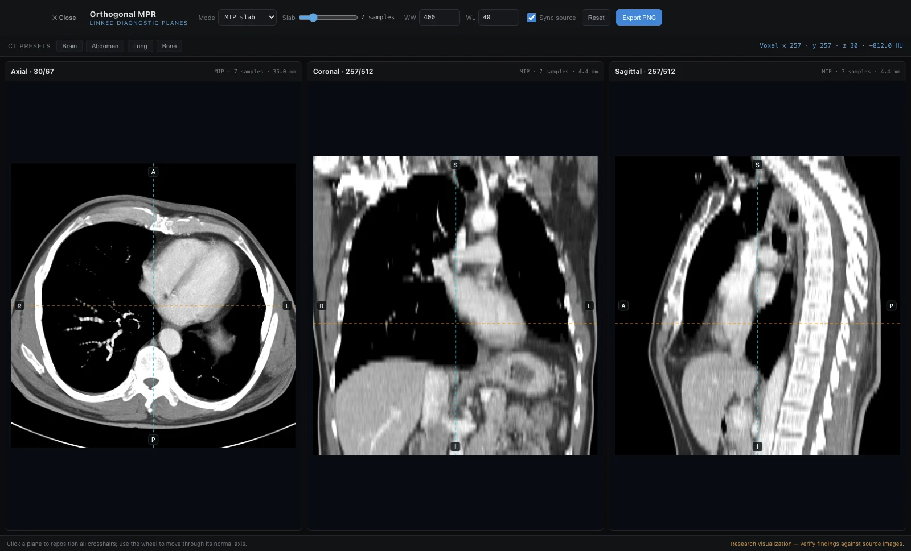
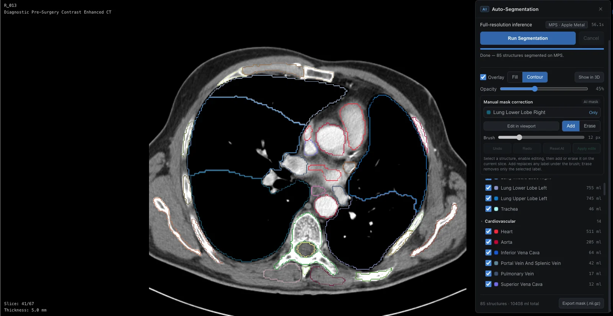
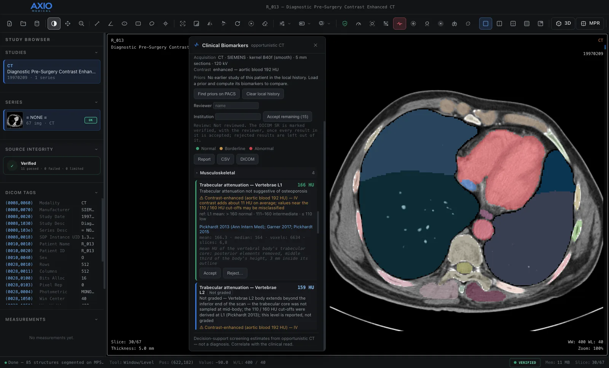
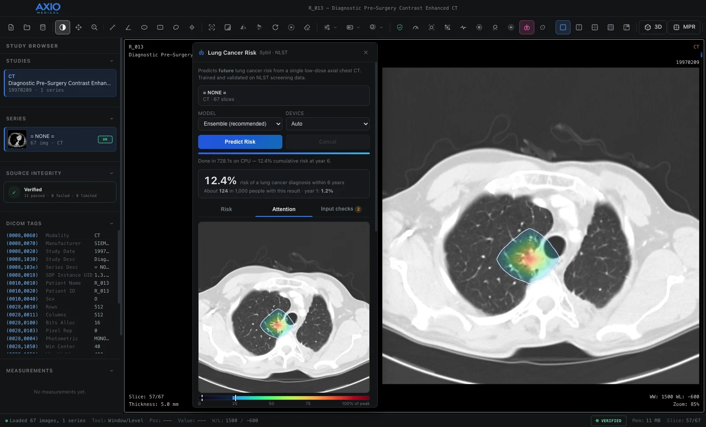
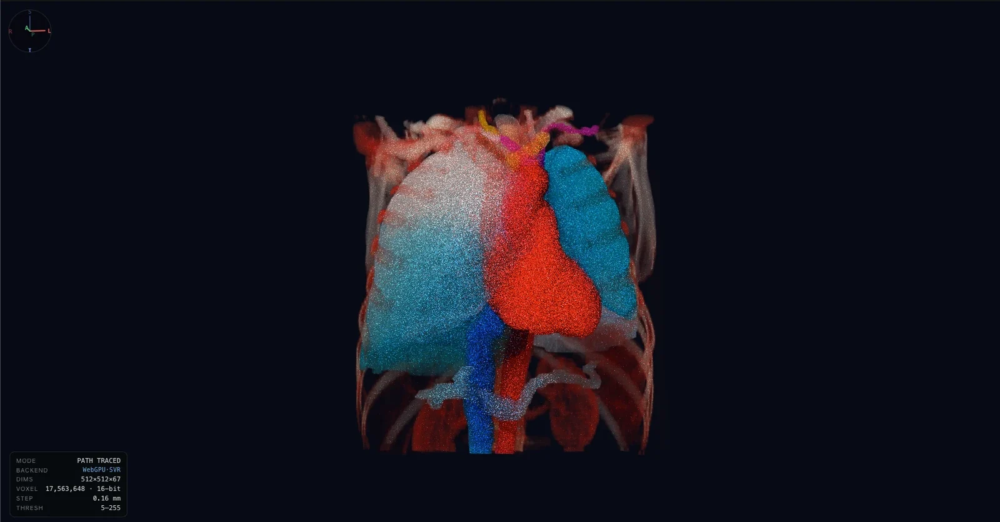

Product overview · AXIO Medical 2.8.14
A complete imaging workstation for clinical research. From routine scans to reviewed, research-ready data.
AXIO Medical takes a study from your PACS or disk, verifies the scan, segments the anatomy with AI and extracts quantitative biomarkers, lung screening and PET measurements. A named reader reviews every result before it is exported as standard DICOM or added to a de-identified cohort dataset — all on the workstation, so patient images never leave the institution.
- Structures
- 117
- CT structures segmented on the workstation
- Biomarkers
- 15+
- opportunistic CT biomarkers, each with its literature reference
- ROI agreement
- 960 / 960
- ROI statistics identical to an independent reference
- Offline
- 0
- bytes of patient data sent anywhere
Built for clinical researchers, radiologists in research programmes, imaging core labs, medical physicists, data scientists and trainees.
Why AXIO
Built for research you can defend
Quantitative imaging research depends on inputs you can trust, measurements you can trace and a reader who signs off. AXIO is designed around all three.
-
Data stays on site
AI, measurement and licence checks run on the workstation, including air-gapped machines. No cloud and no telemetry.
-
Verified input
Every series is checked for geometry and calibration before it is measured. A failing series is blocked, not measured wrongly.
-
Honest grading
Each biomarker is checked against how the scan was acquired, and left ungraded — with the reason — where its threshold does not apply.
-
Reader sign-off
A named reviewer accepts or rejects every AI result. A DICOM report is marked verified only when every result in it was accepted.
-
Standard outputs
Segmentations as DICOM SEG and results as DICOM SR (TID 1500), referencing the source series, ready to file beside it in a PACS.
-
Patient to cohort
The same pipeline runs in batch over folders of studies, into one de-identified, analysis-ready table.
-
Validated and reproducible
Measurements checked against an independent reference on public clinical series. The same inputs and settings give the same results.
-
Methods you can cite
Every method and threshold is documented with its literature reference, with reproducibility guidelines for your methods section.
Workflow
One workstation, from scan to dataset
Each stage works on the same study and the same voxel grid, so every number in the final table traces back to the source pixels.
-
01
Acquire
Open DICOM or NIfTI from disk, or search and retrieve from your PACS over read-only DICOMweb.
-
02
Verify
A deterministic integrity check of identity, matrix, spacing, orientation, slice gaps, slice alignment and rescale.
-
03
Segment
On-device AI labels up to 117 CT structures. Correct any mask with a brush before measuring.
-
04
Quantify
Opportunistic biomarkers, L3 body composition, radiomics, lung nodules, PET SUV and lung cancer risk.
-
05
Review
Accept or reject each result, compare it with the patient's earlier studies, and confirm or override Lung-RADS.
-
06
Report
Export DICOM SEG and SR, a structured report and a CSV of every value with its review decision.
-
07
Scale
Run the same pipeline in batch over a cohort, into one de-identified table with a QC image per series.
-
08
Share
Export de-identified DICOM: dates shifted, identifiers pseudonymised, faces removed from head scans on request.
Capabilities · Data and viewing
Trusted input, calibrated viewing
AXIO Workstation and AXIO Connect bring studies in, check them, and give every reader the same calibrated view.
Disk or PACS
- DICOM — CT, MR, PET, nuclear medicine, X-ray, ultrasound, mammography — plus NIfTI and common image formats
- STL, OBJ and PLY surface meshes
- Read-only DICOMweb: QIDO-RS search and WADO-RS retrieval, or an exact Study Instance UID lookup
- HTTPS only, session-only credentials, every instance verified before it is decoded
- Temporary PACS files removed automatically
Fail-closed checks
- Instance identity, pixel payload, matrix, pixel spacing, orientation and frame of reference
- Slice positions, outlier gaps, thickness against spacing, and rescale stability
- Quantitative MPR, 3D and AI segmentation are blocked when a check fails
- Structured JSON evidence with explicit tolerances and per-check findings
Calibrated reading
- Window/level presets, pan, zoom, rotate, flip, invert and cine
- 1, 1×2, 2×2 and 3×3 layouts, saved per study type
- Length, angle, ellipse, rectangle and freehand ROIs in mm and mm²
- Exact robust statistics: P05, median, P95 and median absolute deviation
- Histogram, Otsu thresholds, texture, edge detection, CLAHE and statistical process control

Capabilities · AXIO Engines
Quantification, on the workstation
The AI runtime installs itself on first launch for NVIDIA CUDA, Apple Metal or CPU. Segmentation, biomarkers and radiomics all read the exact same image and mask, with no resampling between them.
TotalSegmentator, on device
- Whole-body CT (117 structures) and MR (50 structures)
- Specialised tasks: lung airways and vessels, lung nodules, pleural and pericardial effusion, Couinaud liver segments, liver vessels and tumour
- Licence-free models only
- Brush correction, with interpolation between corrected slices
- Optional automatic start once a CT series passes integrity
Measurements a routine CT already holds
- Liver fat, emphysema, vertebral bone density, aortic diameter, vascular calcification and organ volumes
- Graded normal, borderline or abnormal against published thresholds, each with its citation
- Input checks — contrast phase from the aorta, kernel, slice thickness, kV and coverage — leave a result Not graded, with the reason, where its threshold does not apply
- Compared with the patient's earlier studies from a local, pseudonymised history
Whole-slice L3 analysis
- Skeletal muscle area and index, graded for low muscle quantity
- Muscle attenuation, graded for myosteatosis
- Visceral, subcutaneous and intermuscular fat
- A QC tissue map of the slice, with no licensed tissue model required; graded only when the abdominal wall is traced
PyRadiomics features
- 107 features per structure: first-order, shape, GLCM, GLRLM, GLSZM, GLDM and NGTDM
- Optional wavelet and Laplacian-of-Gaussian filtered features
- Configurable bin width; features grouped by class and filterable
- CSV export for statistical analysis, recording the PyRadiomics version, bin width and conventions

Biomarker references
The thresholds each result is graded against. A result is graded only where its reference applies to the scan.
| Measure | Graded against | Reference |
|---|---|---|
| Liver attenuation | < 40 HU: moderate–severe steatosis (non-contrast only) | Kodama 2007; Pickhardt 2012 |
| Liver − spleen attenuation | ≤ −10 HU: steatosis (non-contrast only) | Boyce 2010 |
| Emphysema index (LAA%−950) | > 6 % of lung below −950 HU | Lynch 2015 (Fleischner); COPDGene |
| Perc15 | 15th-percentile lung attenuation, reported | Dirksen 1997 |
| Vertebral trabecular attenuation | Mean of the trabecular core at L1: ≤ 110 HU low; 111–160 HU intermediate | Pickhardt 2013 |
| Maximum aortic diameter | Perpendicular to the vessel: ≥ 30 mm (abdominal aorta); below 30 mm reported, not graded normal | USPSTF 2019; ACC/AHA 2022 |
| Vascular wall calcification | Screening indicator, non-gated | adapted Agatston |
| Organ volumes | Population ranges: hepatomegaly, splenomegaly | population volumetry |
| Skeletal muscle index at L3 | < 41 cm²/m² women; < 43 men with BMI < 25; < 53 men with BMI ≥ 25 | Martin 2013 |
| Muscle attenuation at L3 | < 41 HU with BMI < 25; < 33 HU with BMI ≥ 25 | Martin 2013 |
| Visceral, subcutaneous and intermuscular fat | Areas reported from standard HU ranges | Mourtzakis 2008 |

Capabilities · Screening and oncology
Screening, tumour response, risk and PET in one place
Nodule measurement, Lung-RADS, tumour response by RECIST 1.1, lung cancer risk and PET lesion quantification, each with the reader's decision recorded beside the software's proposal.
Nodules and Lung-RADS v2022
- Click-to-segment nodules: long and short axis, mean diameter, volume, solid part and proposed type
- Optional automatic detection, each candidate accepted or rejected by the reader
- A warning when a nodule runs on as a vessel
- Matching to the patient's prior read, with growth assessment
- Lung-RADS categories and management, with reader override and reason
- One screening report with nodules, emphysema index and lung cancer risk
RECIST 1.1, lesion by lesion
- Target and non-target lesions over dated studies: five targets, two per organ, lymph nodes as one organ
- One click outlines a lesion in 3D; RECIST diameters and volume come from the outline, calipers when you prefer
- At the next study every lesion is found again by the patient's anatomy and outlined the same way, for the reader to confirm
- Response per timepoint, best overall response and date of progression, by the guideline and its 2016 update
- Reader overrides kept beside the computed response, with a reason
1–6 year risk from one CT
- Sybil ensemble, trained and validated on the National Lung Screening Trial
- Cumulative risk for each year from 1 to 6, from a single low-dose chest CT, and the risk within each year
- The five ensemble members, each with its own published calibration, shown when they reproduce the ensemble exactly
- Attention map placed by replaying the model's own preprocessing, with the regions holding 50 % and 90 % of it, hotspots and concentration statistics
- Checks of slice thickness, spacing, coverage, contrast and dose against what the model was developed on
- JSON report recording the model, version, device and instance count, and the attention figure as PNG
- Valid only for the screening population it was trained on
SUV and lesion burden
- SUVbw and SUL (lean body mass) by the QIBA vendor-neutral procedure
- In the pixel probe and ROI statistics, with the reason stated whenever SUV cannot be computed
- Click-to-grow lesion VOIs: SUVmax, SUVpeak (1 mL sphere), metabolic tumour volume and total lesion glycolysis
- MAX41, SUV4 and SUV2.5 thresholds
Used within its limits
The risk model is validated on low-dose screening CT in adults aged 55–74 with a significant smoking history. Scores outside that population are unsupported, and an attention map is not a detection: it never locates, measures or excludes a lesion.

Capabilities · Review and output
Reviewed results, in standard formats
Nothing leaves AXIO without a reader's decision attached, and everything leaves in a format your PACS, statistics software or collaborators already read.
Accept, reject, compare
- Accept or reject each biomarker under a named reviewer and institution
- Every rejection carries its reason into the report and CSV
- A DICOM SR is marked verified only when every result in it was accepted
- Comparison with the patient's earlier studies, with rules for when two acquisitions are comparable
One pipeline, many studies
- Batch run: integrity → AI segmentation → biomarkers with input checks
- One de-identified cohort CSV, plus a JSON record and a QC image per series
- Restartable: an interrupted run continues where it stopped
- Uses the workstation's own parser, checks and models
De-identified DICOM
- DICOM PS3.15 Basic Profile, with dates shifted per patient and patient characteristics kept
- Consistent pseudonyms and UIDs across exports from one key
- Series that may carry text in their pixels are refused
- Faces removed from head CT and MR on request
What you can export
| Output | Format |
|---|---|
| Segmentation | DICOM SEG, SNOMED CT coded, referencing the source series |
| Biomarker results | DICOM SR (TID 1500 measurement report), with grades and unmet input checks |
| Report and data | Structured text report and CSV, with review decisions and prior comparison |
| Masks and features | NIfTI segmentation masks; radiomics CSV |
| Tumour response | Text report, CSV and JSON: every lesion at every timepoint, the responses with their reasons, reader overrides |
| Lung cancer risk | JSON trajectory with attention, ensemble members and input checks; PNG attention figure |
| Integrity evidence | JSON with tolerances and per-check findings |
| Cohort | De-identified CSV, JSON records and QC images |
| Study copy | De-identified DICOM |
| Figures | PNG of the 2D view with overlays, MPR composites and 3D renders |
Capabilities · Visualization
See the anatomy behind every number
3D that stays tied to the measured data, for checking segmentations, teaching and publication figures.
- Linked axial, coronal and sagittal MPR with MIP, MinIP and mean slabs
- Volume, MIP, Surface, Cinematic and Path Traced 3D, with HDR environment lighting
- AI structures in their anatomical colours, or as surfaces that enclose their measured volume to within about 0.5 %
- Click any point in 3D to reach the exact source voxel on its slice or in MPR
- Clip planes that show the CT on the cut face
More in Imaging and 3D surfaces.

Validation
Checked against independent references
AXIO was run on four public TCIA series — two CT, an oblique 3D MR and an FDG PET, 635 slices in all — and compared with a pydicom and numpy reference that shares none of its code.
- Decoded values
- 0
- differing values, compared bit for bit
- ROI statistics
- 960 / 960
- identical pixels, mean and SD
- 3D picks
- 19 / 19
- exact source value
- Injected faults
- 5 / 5
- blocked by the integrity check
-
PASS
Geometry and measurement
Slice order, pixel and slice spacing and 3D extents exact; 160 lengths exact to the displayed precision; 80 angles exact to 0.1°; PET scaled correctly with 241 different rescale slopes.
-
PASS
Repeatability
Each series loaded twice gives bit-identical statistics, and 3D exports of the same view are bit-identical across sessions.
-
PASS
AI pipeline
On a public chest CT, the mask produced through the app is voxel-identical to a reference pipeline built from the DICOM geometry, and 9 of 9 biomarkers and 10 of 10 first-order radiomic features reproduce exactly in plain numpy.
Engineering verification for research and educational use, not a clinical performance study. Agreement is shown on these data; other vendors and acquisitions need their own checks. Details in Accuracy.
Security and compliance
Designed for hospital research networks
Data and network
- The only connections are to your PACS, when an operator opens it, and the one-time AI setup
- Read-only PACS access: no STOW-RS upload and no DIMSE C-STORE
- HTTPS enforced, credentials kept for the session only, redirects rejected
- The interface cannot reach the network or the file system directly
- Prior-study history stored locally under keyed pseudonyms, and clearable
Licensing and status
- 30-day trial of every feature, then an institutional licence
- Signed licence keys checked on the workstation — no licence server, works air-gapped
- Third-party components listed with their licences in the app
- Research and educational use only: not FDA-cleared or CE-marked
Use cases
Where research teams use AXIO
-
Opportunistic screening studies
Liver fat, bone density, emphysema and aortic size measured on CTs that already exist, with no extra scan.
-
Sarcopenia and body composition
L3 muscle and fat measures for oncology, surgical and ageing cohorts.
-
Lung cancer screening research
Nodule measurement, Lung-RADS, prior comparison and lung cancer risk in one read.
-
Oncology and PET response
SUV, metabolic tumour volume and total lesion glycolysis across time points.
-
Radiomics and AI development
Consistent features and reader-reviewed labels as training and validation data.
-
Retrospective cohorts
Hundreds of studies processed in batch into one analysis-ready, de-identified table.
-
Multicentre data sharing
De-identification, including face removal, before data leaves the site.
-
Imaging core labs and QA
Integrity checks, statistical process control, and reviewer decisions recorded in every report.
-
Education and training
Residents and students learn quantitative reading on real cases, with 3D anatomy linked to every slice.
Requirements
What it runs on
| macOS | 11 or later · Apple Silicon (Intel Macs: 2.8.8) |
| Windows | 10 / 11 · x64, installer or portable |
| Memory | 16 GB recommended |
| Acceleration | Apple Metal, NVIDIA CUDA or CPU |
| Disk | ~6 GB for the AI runtime, once |
| Lung cancer risk | ~3 GB on first use; ~11 GB memory per scan |
| Network | First-run setup only |
| DICOM | Uncompressed transfer syntaxes |
Path Traced 3D needs a WebGPU-capable GPU; other machines use the Cinematic renderer. AI runs on CPU where no supported GPU is present, roughly 3–5 times slower. Compressed DICOM (JPEG, JPEG-LS, JPEG 2000, RLE) is detected and reported; convert it to an uncompressed transfer syntax first.
Evaluate it on your own cases
Every feature, for 30 days, with no account and no sign-up. An institutional licence keeps it running after that.